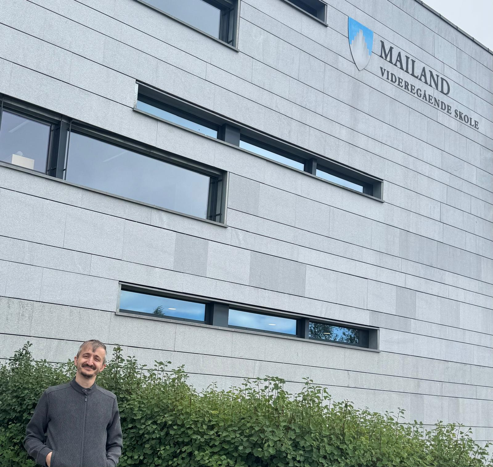

The person behind the projects
About me
Developer, educator and lifelong learner.
Hi, I'm Jakob.
I have a background in education and information technology. My interests include web development, educational technology and building useful digital experiences.
This site is a home for my projects, experiments and writing — from software projects to small tools powered by public APIs.
My journey
Information technology
IT studies at OsloMet, completed in 2025.
Mailand vgs
Teaching technology and digital skills.
Development & community
Web applications, learning resources and inclusive projects.